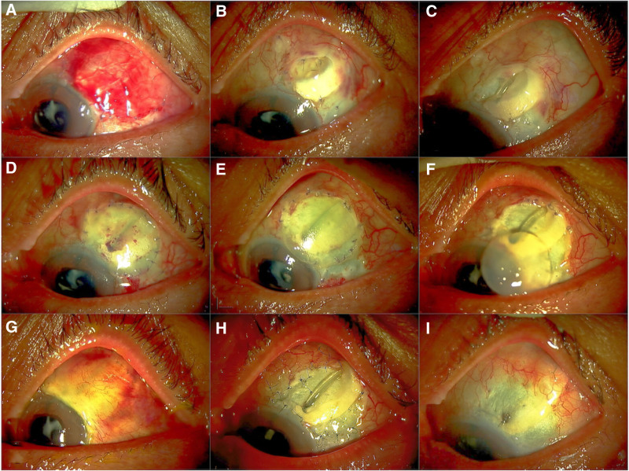
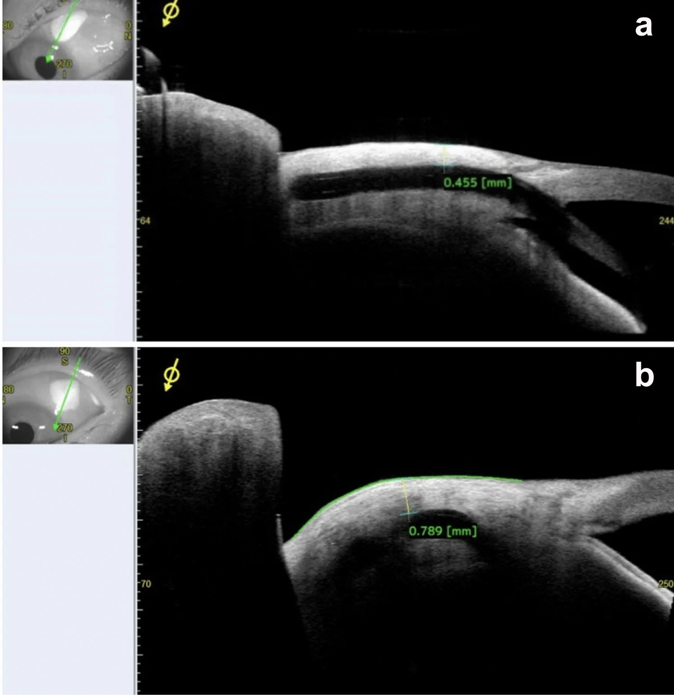
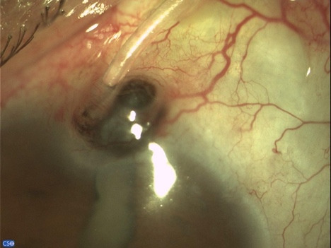
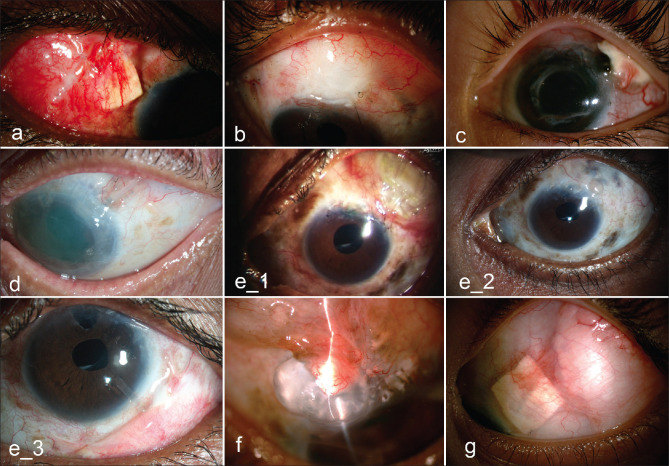
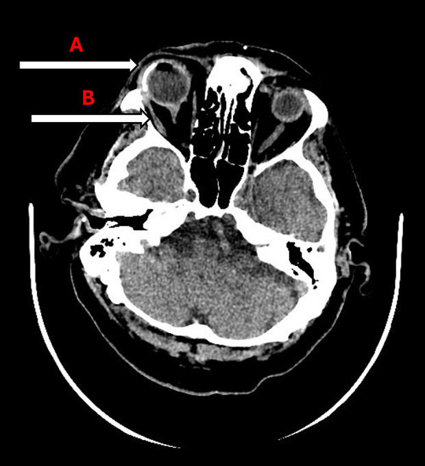

3224 — Lộ ống/bản van dẫn lưu glôcôm muộn: mảnh ghép đã tiêu, kết mạc mỏng, hay ổ nhiễm đã lan vào nhãn cầu? / Late glaucoma drainage device exposure and peri-implant infection
Tags: pattern:lo-vat-lieu pattern:lo-ong-van pattern:lo-ban-van pattern:nhien-quanh-van pattern:mu-tien-phong pattern:loi-mat pattern:phu-mo-hoc-mat vung:mat vung:ket-mac vung:cung-mac vung:tien-phong vung:hoc-mat anatomy:van-dan-luu-glaucoma anatomy:manh-ghep-cung-mac protocol:AS-OCT protocol:UBM protocol:CT-hoc-mat protocol:seidel protocol:cay-dich-kinh score:IOP incidentaloma:van-dan-luu
Mức chắc chắn (certainty): tổng hợp y văn (literature synthesis) — ghép đoàn hệ 12.849 bệnh nhân đặt van so với 9.006 trabeculectomy và 3.097 đai củng mạc (PMID 42768080), 405 mắt Baerveldt đo AS-OCT (PMID 42018117), 76 mắt vá lộ ống (PMID 38982302), 45 mắt viêm nội nhãn sau van (PMID 41666950), 12,5 triệu thủ thuật IRIS (PMID 41985695), 101 mắt viêm nội nhãn sau mổ glôcôm (PMID 41346232), 84 mắt so sánh vật liệu vá (PMC12274542), 50 mắt AS-OCT mảnh ghép (PMC12583483), 26 mắt AS-OCT màng ngoài tim (PMC12095395), 1.303 mắt đặt van không mảnh ghép (PMC12013324) và các ca lâm sàng có ảnh. Nhóm không có bệnh nhân của mình; chỗ suy luận đánh dấu [suy luận].
Ranh giới với bài đã có: 3219 trả lời song thị/hạn chế vận nhãn sau van; 3206 phủ bao xơ quanh bản làm tăng nhãn áp; 1996 phủ ống bít/tụt; 1993 phủ chọn van/needling; 1991 phủ rò bọng lọc sau trabeculectomy (không có vật liệu). Bài này chỉ trả lời một câu: kết mạc trên ống/bản van đã rách hoặc mảnh ghép đã tiêu — khi nào chỉ vá, khi nào phải tháo toàn bộ, và đọc gì trên AS-OCT/CT để quyết định?
Câu chốt — sáu con số phải thuộc: (1) Viêm nội nhãn sau đặt van: 0,82% / 1,57% / 1,87% ở 1 / 3 / 5 năm (12.849 bệnh nhân), so với 0,47% / 0,78% / 0,96% sau trabeculectomy; nguy cơ 30 ngày sau van chỉ 0,075% (1/1.333) (PMID 42768080; PMID 41985695). (2) Trong 45 mắt viêm nội nhãn sau van, 73% đang lộ ống hoặc bản lúc chẩn đoán và 18% vừa vá lộ ống trước đó → 91% gắn với lộ vật liệu; khởi phát trung vị 4 năm (6 tuần – 11 năm); cấy dương 51%; cả 45 mắt cuối cùng đều phải tháo van, chỉ 22% đạt ≥ 20/200 (PMID 41666950). (3) Tỉ lệ lộ ống sau Baerveldt: 12/405 = 2,96% (theo dõi trung bình 630,7 ngày), với glôcôm tân mạch OR 5,03 và đặt ống vào tiền phòng OR 6,07 (PMID 42018117). (4) Vá lộ ống giữ được van: sống không tái lộ 76,2% / 72,7% / 54,7% ở 1 / 2 / 4 năm; đã vá 1 lần trước đó HR 3,06, mảnh ghép màng ngoài tim HR 3,43; đổi vị trí ống vào tiền phòng/rãnh thể mi: 0/9 tái lộ (PMID 38982302). (5) AS-OCT đo được bề dày kết mạc–củng mạc trên ống: trung vị 190 µm (54–552) ở mắt nguy cơ cao; mảnh ghép màng ngoài tim mỏng 42,1 µm/tháng, còn 1.020 → 564 µm sau 12 tháng (vs 1.575 → 1.380 µm với cân mạc) và 5 ca lộ ống vs 0 (PMID 43018021; PMC12583483). (6) Vật liệu vá: cân mạc 4/43 = 9,3% lộ so với mảnh giác mạc 1/41 = 2,4% trong 18 tháng (ở góc trên: 4 vs 0, p = 0,045) (PMC12274542).
1. Tổng quan bệnh học – cơ chế hình ảnh
1.1 Ống và bản van được phủ bằng gì — "mái nhà" chỉ dày vài trăm micromet
- Cấu trúc: van dẫn lưu glôcôm (glaucoma drainage device, GDD) gồm bản (plate) khâu vào củng mạc 8–10 mm sau rìa, nối với ống silicon đi qua củng mạc vào tiền phòng hoặc rãnh thể mi. Đoạn ống ngoài củng mạc chỉ được che bởi mảnh ghép (patch graft) — củng mạc đồng loại, giác mạc, màng ngoài tim, cân mạc — rồi đến Tenon + kết mạc.
- Con số quyết định: AS-OCT trên 22 mắt Ahmed có ống nằm "nông" lâm sàng cho thấy bề dày kết mạc–củng mạc trên ống chỉ trung vị 190 µm (54–552 µm), và mỏng dần theo thời gian (ρ = −0,44; p = 0,034) — nhóm ≥ 5 năm còn 119 µm (64–227) so với 273 µm ở nhóm ≤ 1 năm (PMID 43018021). 190 µm là bề dày của một tờ giấy — đây là lý do tuyệt đối không được "chọc dò" hay "nắn" vùng này.
- Ống đặt ở đâu quyết định độ dày mái nhà: AS-OCT cùng một mắt cho 0,455 mm khi ống vào tiền phòng và 0,789 mm khi ống qua pars plana (PMC13616009, Fig. 1); trên 405 mắt Baerveldt, bề dày trên ống tiền phòng mỏng hơn rãnh thể mi (p = 0,039) và pars plana (p < 0,001) (PMID 42018117). Đây là cơ sở giải phẫu của OR 6,07 cho ống tiền phòng.
1.2 TẠI SAO vật liệu lộ ra — bốn cơ chế, và tại sao nó là "cửa sau" vào nhãn cầu
| Cơ chế | Vì sao mái nhà mỏng đi | Dấu chốt lâm sàng |
|---|---|---|
| 1. Tiêu mảnh ghép (graft resorption) | Mảnh ghép không có mạch, bị thấm dịch và tế bào viêm; màng ngoài tim mỏng 42,1 µm/tháng (PMC12583483) | Thấy ống qua mảnh ghép mờ đục, không đau, không mủ |
| 2. Kết mạc–Tenon mỏng do thuốc/mổ trước | Mitomycin C, mổ glôcôm nhiều lần, đốt thể mi, đái tháo đường → kết mạc mất mạch, co rút | Kết mạc trắng bệch, dính, không di động quanh ống |
| 3. Cọ xát cơ học | Mi chặt (xơ cứng bì), dụi mắt, kính áp tròng, ống nông | Lộ từng đoạn, tiến triển chậm nhiều tháng |
| 4. Viêm tại chỗ (nhiễm trùng/viêm củng mạc/HZO) | Viêm làm tan củng mạc và mảnh ghép từ bên dưới; Herpes zoster tái hoạt ẩn gây lộ tái phát nhiều lần dù đã vá | Đau, đỏ, mủ, mảnh ghép trắng đục; có thể kèm loét giác mạc giả nhánh (PMC11688080) |
- TẠI SAO lộ ống nguy hiểm hơn rò bọng lọc: bọng lọc là khoang dưới kết mạc, còn ống silicon là vật liệu ngoại lai xuyên thẳng vào nội nhãn. Khi kết mạc rách, vi khuẩn đi theo mặt ngoài ống vào tiền phòng — không cần thủng củng mạc mới. Bằng chứng dịch tễ: 91% các ca viêm nội nhãn sau van có lộ vật liệu hoặc vừa vá lộ (PMID 41666950), trong khi viêm nội nhãn sau đai củng mạc (không thông vào nội nhãn) chỉ 0,39% ở 5 năm (PMID 42768080).
- TẠI SAO kháng sinh đơn thuần thường thất bại: vi khuẩn bám thành màng sinh học (biofilm) trên silicon, và ổ nhiễm có thể nằm quanh bản van trong hốc mắt — nơi thuốc nhỏ và thuốc tiêm khó tới. Trong loạt 45 mắt, cấy dương 51% với phổ rộng (S. epidermidis 4, S. aureus 3, liên cầu 2, mycobacteria 4, gram âm 8, nấm 2) và tất cả đều phải tháo van dù ban đầu chỉ tiêm nội nhãn (PMID 41666950). Mycobacteria và nấm là lý do phải cấy mẫu đặc biệt, không chỉ cấy thường.
1.3 Vì sao "muộn" — đường cong thời gian
- Lộ ống xuất hiện 17,2 ± 18,0 tháng sau đặt van trong loạt 64 mắt (PMID 27099461) và 12,25 ± 6,36 tháng trong loạt 8 mắt (PMC11451231); nhưng viêm nội nhãn lại có trung vị 4 năm (PMID 41666950) — nghĩa là lộ ống tồn tại nhiều năm trước khi nhiễm. Vì vậy lộ ống không phải biến chứng "đã qua" mà là nguy cơ tích lũy.
- Tại sao thời gian dài: mảnh ghép mỏng dần từ từ (42,1 µm/tháng), kết mạc mỏng dần theo năm (273 → 119 µm), và mỗi đợt viêm kết mạc là một lần "thử" hàng rào.
1.4 Vật lý của ba phương tiện chẩn đoán
| Phương tiện | Nguyên lý | Trả lời câu gì | Giới hạn |
|---|---|---|---|
| AS-OCT (swept-source ~1310 nm) | Giao thoa ánh sáng; phân giải trục ~5–10 µm, không tiếp xúc | Còn hay mất lớp kết mạc trên ống; bề dày µm; mảnh ghép còn hay tiêu | Không xuyên qua mảnh ghép dày/đục; cần ống nằm nông mới đo được |
| UBM (50 MHz) | Siêu âm tần số cao, xuyên qua mảnh ghép đục | Vị trí ống trong rãnh thể mi, bản van, ổ dịch quanh bản | Cần tiếp xúc nước, khó qua kết mạc sẹo |
| CT hốc mắt ≤ 1 mm | Đậm độ tia X | Lan vào hốc mắt: lồi mắt, thâm nhiễm mỡ, cơ to, ổ áp-xe, viêm mô tế bào | Silicon gần đậm độ mô mềm → không dùng để xác định lộ ống; chỉ dùng cho biến chứng hốc mắt |
- B-scan 10 MHz khi môi trường trong suốt bị mất: hạt lấm tấm dịch kính (vitritis) + dày thành nhãn cầu + bong hắc mạc nông = viêm nội nhãn (ca PMC13270879: B-scan cho hạt dịch kính dày, dày thành nhãn cầu, bong hắc mạc nông; CT cho lồi mắt + thâm nhiễm mỡ hốc mắt + cơ trực ngoài to).
2. Mẫu hình + chẩn đoán phân biệt theo vị trí (gamut)
- Mẫu hình trung tâm: vật liệu ngoại lai nhìn thấy được qua kết mạc ± mủ ± viêm. Ba câu hỏi theo thứ tự: (1) lộ ở đâu — ống hay bản? (2) có nhiễm tại chỗ không? (3) đã vào nội nhãn/hốc mắt chưa?
- Theo vị trí:
- Sát rìa (1–3 mm): lộ ống tại củng mạc quanh rìa — hay gặp nhất, dễ thấy, dễ vá; nhưng gần tiền phòng nhất nên nguy cơ vào nội nhãn cao.
- Giữa củng mạc (3–8 mm): lộ ống trên đường đi tới bản; mảnh ghép tiêu từng đoạn.
- Xích đạo/sau xích đạo: lộ bản van — mảng trắng–xám lớn, ít đau, dễ bị bỏ qua vì nằm dưới mi; nguy cơ nhiễm hốc mắt.
- Cùng đồ trên: lộ ống + dẫn lưu ra cùng đồ → dễ nhầm với lệ đạo hoặc nang kết mạc.
- Theo mức độ nhiễm (thang thực hành, [suy luận]): A. lộ khô (không mủ, không Seidel) → B. nhiễm quanh van (đỏ, mủ, đau, tiền phòng còn trong) → C. nhiễm nội nhãn/hốc mắt (vitritis, giảm thị lực, lồi mắt, hạn chế vận nhãn). Mỗi bậc đổi hoàn toàn cách xử trí — đây là điểm khác biệt lớn nhất so với "rò bọng lọc" (bài 1991).
- Gamut "mảng trắng/vàng trên ống": mảnh ghép đục–vôi hóa · lộ ống khô · mủ dưới mảnh ghép · nang kết mạc (inclusion cyst) · hạt dị vật (foreign-body granuloma) · lộ chỉ khâu.

Chín ảnh cùng một mắt (ngày 02/08/2020 → 27/02/2021): A sau đặt van; B–C kết mạc và mảnh ghép củng mạc đồng loại đục, khô, tiêu dần rồi lộ ống; D–F vá lại bằng mảnh giác mạc + kết mạc tự thân → tiêu hoàn toàn; G–H vá lần ba bằng mảnh giác mạc + kết mạc mắt đối diện → tiêu tiếp; I cắt bỏ ống. Nguồn: Medicine (Baltimore) 2024 (PMC11688080), CC BY 4.0.3. Bảng so sánh phân biệt (ma trận đối chiếu)
| Thực thể (entity) | Hình ảnh điển hình | Chốt vào (rule-in) | Chốt loại (rule-out) | Gợi ý xác nhận |
|---|---|---|---|---|
| Lộ ống khô, không nhiễm | Ống silicon trong suốt thấy rõ dưới kết mạc mỏng; không mủ, không đau; Seidel (−) | Thấy ống + không mủ + không vitritis; AS-OCT: mất lớp kết mạc trên ống | Còn lớp kết mạc liên tục (dù mỏng) → chưa lộ, chỉ theo dõi | AS-OCT dọc toàn bộ ống; đo chiều dài lộ (mm) |
| Lộ ống + nhiễm quanh van (blebitis-like) | Đỏ, mủ vàng–xanh quanh ống, đau; tiền phòng còn trong | Mủ tại chỗ + cấy kết mạc dương; không tế bào dịch kính | Vitritis, giảm thị lực nhanh → đã là nội nhãn | Cấy mủ + tiền phòng; AS-OCT xem mảnh ghép còn hay mất |
| Lộ bản van (plate exposure) | Mảng trắng–xám lớn vùng xích đạo, kết mạc quanh mỏng, trắng bệch; thường không đau | Thấy bản qua kết mạc; UBM/AS-OCT: không còn mô phủ; sờ thấy cạnh bản | Chỉ mảnh ghép trắng đục nhưng kết mạc còn liên tục | UBM 50 MHz; CT nếu có lồi mắt/hạn chế vận nhãn |
| Nhiễm hốc mắt quanh bản | Lồi mắt, hạn chế vận nhãn, đau sâu, sốt; CT: thâm nhiễm mỡ, cơ to, ổ dịch | CT có thâm nhiễm mỡ/cơ + lộ bản/ống; cấy dịch hốc mắt | CT bình thường + không lộ → nghĩ nguyên nhân khác (bài 1461) | CT ≤ 1 mm ± cản quang; hội chẩn glôcôm–tạo hình |
| Viêm nội nhãn muộn sau van | Giảm thị lực + đau + tế bào/mủ tiền phòng + vitritis; 73% có lộ vật liệu | Vitritis + cấy dịch kính; B-scan hạt dịch kính | Chỉ mủ tiền phòng không vitritis → nhiễm tại chỗ | Chọc dịch kính trước kháng sinh; cấy cả mycobacteria/nấm |
| Viêm nội nhãn KHÔNG lộ vật liệu (27%) | Vitritis + van nguyên vẹn trên lâm sàng | Cấy dịch kính dương; AS-OCT xác nhận kết mạc còn liên tục | Có lộ ở bất kỳ đâu (khám cả 4 góc, lật mi) → quay lại hàng trên | AS-OCT toàn bộ ống; không loại trừ chỉ vì "van không lộ" |
| Lộ chỉ khâu (suture erosion) | Sợi chỉ nylon xanh–trắng nhô qua kết mạc, không có ống | Thấy chỉ, không thấy ống; AS-OCT: vật liệu rất mảnh, thẳng | Ống silicon trong suốt, đường kính ~0,6 mm, cong | Bóc chỉ, vá kết mạc; không tháo van |
| Nang kết mạc sau vá (inclusion cyst) | Nang trong, dưới mảnh ghép, lớn dần sau vá lộ ống | Nang xuất hiện sau mổ vá; chọc ra dịch trong | Nang có mủ → áp-xe, không phải nang đơn thuần | AS-OCT: vách nang; theo dõi sát (đã có ca viêm nội nhãn sau nang — PMC5015635) |

AS-OCT (CASIA2) cắt dọc ống tại chỗ vào củng mạc. (a) ống vào tiền phòng: mô phủ 0,455 mm; (b) ống qua pars plana: mô phủ 0,789 mm. Đo từ mặt kết mạc đến bờ ngoài ống. Đây là "mái nhà" duy nhất giữa nội nhãn và vi khuẩn ngoài mắt. Nguồn: Jpn J Ophthalmol 2026 (PMC13616009), CC BY 4.0.3.1 Ranh giới quan trọng: lộ vật liệu ≠ nhiễm, và "trông lành" ≠ đã khỏi
- Lộ ống mạn có thể biểu mô hóa: ống nằm dưới lớp kết mạc mỏng đã phủ biểu mô trông như "đã liền" (ảnh dưới) — nhưng lớp phủ chỉ còn vài chục micromet và không có Tenon, nên vẫn là điểm yếu. Không được coi là "ổn định" mà ngừng theo dõi [suy luận].
- Seidel âm không loại trừ nhiễm: rò lượng nhỏ có thể âm giả; và nhiễm có thể đi theo mặt ngoài ống mà không có dòng chảy nhìn thấy.

Ống silicon trong suốt bắt đầu từ rìa, chạy trên vùng củng mạc mỏng, lộ sắc tố hắc mạc, kết mạc quanh sẹo, xung huyết, phủ không đều — lộ ống mạn đã được biểu mô hóa một phần. Nguồn: Rom J Ophthalmol 2024 (PMC11007568), CC BY 2.0.4. Protocol chụp/đo + hệ phân độ và ngưỡng xử trí
4.1 Trình tự đọc — 6 bước, dưới 15 phút
- Đèn khe + fluorescein 2%: đo chiều dài lộ (mm), vị trí (cách rìa bao nhiêu mm), Seidel. Nghi ngờ "rò giả" từ lệ đạo ở cùng đồ trên–thái dương → tiêm trypan blue vào tiền phòng, xem thuốc đi dọc ống ra cùng đồ (PMC12284709) — kỹ thuật này phân biệt được rò van thật với lệ đạo khi fluorescein không đủ.
- AS-OCT dọc toàn bộ ống: đo bề dày mô phủ (µm) tại điểm mỏng nhất; so với mắt bên và so với lần trước. Ngưỡng tham khảo: ≤ 200 µm là "mái nhà giấy" (trung vị nhóm nguy cơ cao 190 µm) — [suy luận], chưa có ngưỡng đồng thuận.
- UBM 50 MHz nếu nghi lộ bản hoặc ống trong rãnh thể mi (AS-OCT không tới).
- B-scan 10 MHz khi không thấy đáy mắt: tìm hạt dịch kính, dày thành, bong hắc mạc nông.
- CT hốc mắt ≤ 1 mm (± cản quang) khi lồi mắt, hạn chế vận nhãn, đau sâu, sốt: tìm thâm nhiễm mỡ, cơ to, ổ áp-xe, viêm mô tế bào. CT không dùng để chứng minh lộ ống.
- Vi sinh trước kháng sinh: cấy mủ kết mạc + dịch tiền phòng (0,1 mL) ± dịch kính; yêu cầu cấy mycobacteria và nấm vì phổ này có thật (4 mycobacteria, 2 nấm/45 mắt — PMID 41666950).
4.2 Ba tầng quyết định (sơ đồ)
flowchart TD
A["Thấy ống hoặc bản van qua kết mạc"] --> B{"Có mủ, đau, tế bào tiền phòng?"}
B -->|"Không"| C["Lộ khô: AS-OCT đo bề dày, chụp ảnh, theo dõi 1–3 tháng"]
C -->|"Mô phủ mỏng dần hoặc lộ tăng"| D["Vá: mảnh ghép + kết mạc, giữ van"]
C -->|"Ổn định, bề dày không đổi"| E["Theo dõi tiếp; điều trị khô mắt, ngừng dụi"]
B -->|"Có, tiền phòng còn trong"| F["Nhiễm quanh van: cấy + kháng sinh tại chỗ/toàn thân, cân nhắc vá sớm"]
F -->|"Đỡ sau 48–72 giờ"| D
F -->|"Không đỡ hoặc tái phát"| G["Tháo van + dẫn lưu"]
B -->|"Có vitritis, giảm thị lực"| H["Viêm nội nhãn: chọc dịch kính + tiêm nội nhãn ± cắt dịch kính"]
H --> I["Tháo van gần như luôn cần: 45/45 ca"]
B -->|"Lồi mắt, hạn chế vận nhãn, sốt"| J["CT hốc mắt ≤ 1 mm: áp-xe/viêm mô tế bào"]
J --> K["Kháng sinh toàn thân + dẫn lưu/tháo van"]
4.3 Vá giữ van — hiệu quả thật và yếu tố thất bại
- Sống không tái lộ: 76,2% (1 năm), 72,7% (2 năm), 54,7% (4 năm) trên 76 mắt (PMID 38982302) → vá là giải pháp hợp lý nhưng không phải "vá một lần là xong"; gần một nửa tái lộ sau 4 năm.
- Yếu tố tăng thất bại: khoảng cách từ lúc đặt ống đến lúc vá ngắn (HR 2,87) · đã vá 1 lần (HR 3,06) · mảnh ghép màng ngoài tim người (HR 3,43). Ngược lại, đổi vị trí ống vào tiền phòng hoặc rãnh thể mi: 0/9 tái lộ (PMID 38982302).
- Chọn vật liệu: cân mạc 9,3% lộ so với mảnh giác mạc 2,4% (p = 0,184; ở góc trên 4 vs 0, p = 0,045 — PMC12274542); màng ngoài tim mỏng nhanh 42,1 µm/tháng và 5 ca lộ (PMC12583483); vật liệu tổng hợp EverPatch cho sống không lộ 83,5% vs 88,4% với củng mạc đồng loại ở 12 tháng (khác biệt không ý nghĩa — PMC13073034). Kết luận thực hành: ưu tiên củng mạc/giác mạc đồng loại dày, tránh mảnh mỏng ở mắt nguy cơ cao [suy luận].
- Kỹ thuật khi kết mạc đã cạn: túi dưới kết mạc (pocket technique — PMID 38587450), hai đường hầm củng mạc ngắn (8/8 không tái lộ sau 41,25 ± 26,54 tháng — PMC11451231), vạt kết mạc cuống từ cùng đồ trên khi kết mạc thiếu máu do MMC (PMC12746280), mảnh giác mạc + hai lớp màng ối (PMC12790098).
4.4 Khi nào PHẢI tháo
- Viêm nội nhãn: trong 45 mắt, tất cả đều tháo van cuối cùng (PMID 41666950), và trong loạt 101 mắt viêm nội nhãn sau mổ glôcôm thì 97% khởi đầu chỉ tiêm nội nhãn (PMID 41346232) → đừng hứa "giữ được van" với bệnh nhân khi đã có vitritis.
- Nhiễm quanh van không đáp ứng 48–72 giờ hoặc tái phát: 2 ca cắt ống/3 ca tháo toàn bộ trong loạt 1.303 mắt (PMC12013324).
- Lộ bản + tan củng mạc/viêm củng mạc: tháo bản, có thể giữ ống đặt lại dưới kết mạc lành (PMC13771629) hoặc thay bằng microshunt trong cùng thì (PMC13631603).
- Mắt chỉ còn một mắt, thị lực còn tốt: cân nhắc vá bảo tồn trước, vì tháo van = mất kiểm soát nhãn áp và có thể mù do glôcôm [suy luận] — nhưng không được trì hoãn khi có vitritis.
5. Biến thể bình thường và cạm bẫy
- "Tube trace" — ống nhìn thấy nhưng CHƯA lộ: kết mạc còn liên tục, chỉ mỏng; AS-OCT xác nhận biểu mô còn nguyên. Đây là biến thể theo dõi, không phải chỉ định mổ. Mổ ở mắt còn kết mạc liên tục làm mất thêm kết mạc và tạo vòng xoáy tái lộ.
- Mảnh ghép đục/vôi hóa trông như "vật liệu lộ": AS-OCT thấy mô phủ còn trên mảnh ghép → không can thiệp.
- Rò giả từ lệ đạo: cùng đồ trên–thái dương là nơi cả ống van và lệ đạo cùng đổ; fluorescein không phân biệt được nước mắt và thủy dịch → trypan blue tiền phòng (PMC12284709).
- Bỏ sót lộ BẢN vì chỉ khám vùng ống: bản nằm 8–10 mm sau rìa, dưới mi; phải lật mi, cho mắt liếc đối diện, và chụp ảnh 4 góc.
- Bỏ sót nhiễm nội nhãn vì "van không lộ" (27%): vitritis có thể là đường máu hoặc từ ổ nhiễm bản kín đáo; không loại trừ dựa vào lâm sàng bề mặt.
- Nang kết mạc sau vá: nang trong dưới mảnh ghép có thể nhiễm và gây viêm nội nhãn (ca trẻ 2 tuổi — PMC5015635); khi vá phải bóc sạch biểu mô quanh ống và khâu cố định mảnh ghép.
- Chụp CT rồi kết luận "không có gì": silicon gần đậm độ mô mềm; CT âm tính không loại trừ lộ ống, chỉ loại trừ biến chứng hốc mắt.

Chín ảnh mổ/đèn khe: (a) vạt kết mạc; (b) kết mạc mỏng, nhợt; (c) hở củng mạc sau bóc nang Tenon; (d) lộ ống không đáp ứng điều trị bảo tồn; (e₁) lộ hoàn toàn bản van Ahmed đặt ra trước; (e₂) củng mạc mỏng lan rộng sau tháo van; (e₃) van thứ hai đặt ở góc dưới–thái dương; (f) bản van lộ hoàn toàn; (g) đặt lại van dưới. Nguồn: Indian J Ophthalmol 2023 (PMC10683691), CC BY-NC-SA 4.0.
CT lát trục không cản quang ở ca viêm toàn nhãn + viêm mô tế bào hốc mắt 12 ngày sau đặt van Paul: (A) lồi mắt phải + dày mô mềm trước vách; (B) cơ trực ngoài to nhẹ, thâm nhiễm mỡ hốc mắt; thị thần kinh bình thường. CT không thấy ống/bản — giá trị của CT là chứng minh lan ra hốc mắt, không phải tìm vật liệu. Nguồn: Am J Case Rep 2026 (PMC13270879), CC BY-NC-ND 4.0.6. Tự lượng giá — Blind Quiz
Ca 1 — Nam 72 tuổi, glôcôm tân mạch, đặt van Ahmed 1 năm, nay "mắt đỏ, chảy nước mắt" nhưng không đau, thị lực không đổi.
- Câu hỏi: mô tả cấu trúc đi qua củng mạc? Lớp phủ còn hay mất? Ba chẩn đoán phân biệt? Bước tiếp theo?
Bấm để hiện đáp án (findings + chẩn đoán)
- Dấu hiệu: ống silicon trong suốt chạy từ rìa ra sau trên vùng củng mạc mỏng, lộ sắc tố hắc mạc; kết mạc quanh sẹo, xung huyết, phủ không đều — lộ ống mạn đã biểu mô hóa một phần.
- Chẩn đoán: lộ ống khô (không nhiễm) — chưa có mủ, không vitritis. Phân biệt: lộ chỉ khâu · mảnh ghép vôi hóa · nang kết mạc.
- Vì sao không mổ ngay: còn lớp phủ, không nhiễm; nhưng bề dày chỉ vài chục µm nên phải AS-OCT đo và theo dõi 1–3 tháng, dặn bỏ dụi mắt, điều trị khô mắt.
- Nguồn ảnh: Rom J Ophthalmol 2024 (PMC11007568), CC BY 2.0.
Ca 2 — Nam 66 tuổi, glôcôm tân mạch do đái tháo đường, 2 tháng sau đặt van: vùng trên–thái dương có mảng trắng rộng, không đau, nhãn áp 14 mmHg.
- Câu hỏi: cấu trúc nào đang lộ? Vì sao không đau mà vẫn nguy hiểm? Đo gì trước khi quyết định?
Bấm để hiện đáp án (findings + chẩn đoán)
- Dấu hiệu: bản van (plate) lộ hoàn toàn, kết mạc quanh mỏng, nhợt, dính, củng mạc bên dưới mỏng — tương ứng panel e₁/f của hình.
- Chẩn đoán: lộ bản van mạn — không đau vì không có viêm cấp, nhưng bản là "cửa" vào hốc mắt: nhiễm có thể lan thành viêm mô tế bào/áp-xe hốc mắt mà không cần vào nội nhãn.
- Đo trước khi quyết định: UBM 50 MHz (mô phủ quanh bản), AS-OCT đoạn ống, CT hốc mắt nếu lồi mắt/hạn chế vận nhãn; cấy nếu có mủ.
- Nguồn ảnh: Indian J Ophthalmol 2023 (PMC10683691), CC BY-NC-SA 4.0.
Ca 3 — Nam 77 tuổi, 12 ngày sau đặt van Paul: đau nhiều, mi sưng, hạn chế vận nhãn, thị lực còn nhận biết ánh sáng.
- Câu hỏi: hai bất thường trên CT? Chẩn đoán? Xử trí và vì sao không thể tháo van trong thì đầu?
Bấm để hiện đáp án (findings + chẩn đoán)
- Dấu hiệu: (A) lồi mắt + dày mô mềm trước vách; (B) cơ trực ngoài to nhẹ + thâm nhiễm mỡ hốc mắt. B-scan kèm theo: hạt dịch kính dày, dày thành nhãn cầu, bong hắc mạc nông.
- Chẩn đoán: viêm toàn nhãn (panophthalmitis) + viêm mô tế bào hốc mắt sau đặt van — biến chứng 12 ngày, cấy âm tính, điều trị kháng sinh nội nhãn + toàn thân rồi cắt dịch kính; không tháo được van vì viêm dính nặng, thị lực cuối 20/250.
- Bài học: nhiễm sau van có thể biểu hiện bằng hình ảnh hốc mắt trước khi thấy lộ vật liệu; CT là chốt để định mức lan, không phải để tìm ống.
- Nguồn ảnh: Am J Case Rep 2026 (PMC13270879), CC BY-NC-ND 4.0 — nguyên bản, không cắt/ghép.
7. Câu hỏi nghiên cứu & điểm chưa đồng thuận (tính đến 11/2026)
[Tranh cãi] Ở mắt đặt van dẫn lưu glôcôm, vật liệu che ống nào giảm lộ ống nhiều nhất trong 12–24 tháng?
- Đã biết: mảnh giác mạc ít lộ hơn cân mạc (2,4% vs 9,3%; góc trên 0/41 vs 4/39, p = 0,045); cân mạc mỏng 42,1 µm/tháng so với màng ngoài tim; vật liệu tổng hợp tương đương củng mạc đồng loại ở 12 tháng (83,5% vs 88,4%).
- Chưa rõ: các so sánh đều hồi cứu, một trung tâm, cỡ mẫu 19–105 mắt, khác thời điểm đo và định nghĩa lộ → chưa xếp hạng được vật liệu.
- Hướng nghiên cứu: RCT hoặc đoàn hệ tiến cứu phân tầng theo vị trí ống (tiền phòng vs pars plana) và bề dày AS-OCT lúc 3 tháng.
- Nguồn: PMC12274542 (2025); PMC12583483 (2025); PMC13073034 (2026).
[Khoảng trống] Khi đã có viêm nội nhãn sau van, có nhóm bệnh nhân nào giữ được van an toàn bằng cắt dịch kính sớm thay vì tháo?
- Đã biết: loạt 45 mắt phải tháo 100% và chỉ 22% đạt ≥ 20/200; một ca báo cáo giữ van thành công nhờ cắt dịch kính sớm + rút ống khỏi tiền phòng rồi đặt lại, hồi phục thị lực 7 tháng.
- Chưa rõ: không có tiêu chí chọn (mức vitritis, loại vi khuẩn, thời điểm cắt dịch kính), nên ca thành công không khái quát được.
- Hướng nghiên cứu: registry đa trung tâm ghi thời gian tới cắt dịch kính, loại tác nhân, tình trạng lộ vật liệu làm biến số.
- Nguồn: PMID 41666950 (2026); PMC7132143 (2020).
[Khác biệt thực hành] Ngưỡng AS-OCT nào buộc phải vá trước khi lộ?
- Đã biết: mô phủ trên ống ở mắt nguy cơ cao trung vị 190 µm (54–552) và mỏng dần theo năm (273 → 119 µm ở nhóm ≥ 5 năm); mắt lộ ống có mảnh ghép mỏng hơn có ý nghĩa tại 3 và 6 tháng (p = 0,013; p = 0,005).
- Chưa rõ: không có ngưỡng µm được đồng thuận; 190 µm là mô tả của nhóm chọn lọc, không phải ngưỡng can thiệp; đo phụ thuộc máy và vị trí đặt cửa sổ.
- Hướng nghiên cứu: nghiên cứu độ chính xác chẩn đoán với ngưỡng ứng viên (150/200/250 µm), kết cục là lộ ống trong 12 tháng, có mù và cùng một giao thức AS-OCT.
- Nguồn: PMC13616009 (2026); PMC12095395 (2025).
Bài liên quan chéo
- 3219 – Song thị & hạn chế vận nhãn sau van dẫn lưu glôcôm (bản van di lệch/nhiễm — mặt cơ học)
- 3206 – Bọng căng sau van dẫn lưu: bao xơ và tăng nhãn áp
- 1996 – Tắc và tụt ống van dẫn lưu: AS-OCT/UBM
- 1993 – Chọn van & needling bọng lọc
- 1991 – Rò bọng lọc muộn & viêm nội nhãn liên quan bọng (so sánh có/không vật liệu ngoại lai)
- 1461 – Áp-xe dưới màng xương hốc mắt ở trẻ (DDx hốc mắt)
Không dùng để chẩn đoán độc lập khi chưa có người hướng dẫn.